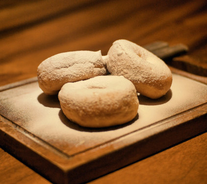

Rosquinha de Trigo
Ingredientes
- 1kg de farinha de trigo
- 3 ovos
- 1 caixa de leite condensado
- 2 colheres cheias de margarina
- 3 colheres de açúcar
- 1 litro de leite
- 1 colher de fermento
Modo de Preparo
- Misture os ingredientes secos.
- Adicione os ovos.
- Adicione a margarina e o leite condensado e o açúcar.
- Adicione o leite até que se forme uma massa a qual se possa manipular com as mãos sem grudar.
- Forme diversos formatos com a massa e coloque-as em uma forma untada com margarina.
- Asse em fogo à 180°C até dourar.